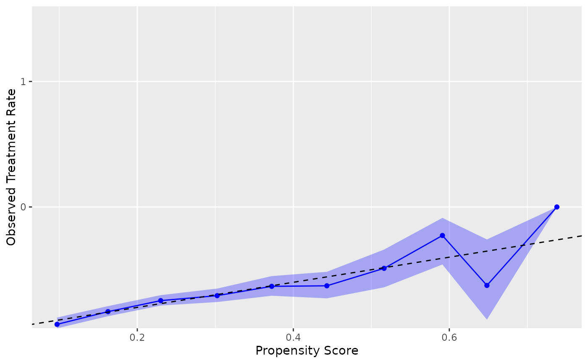
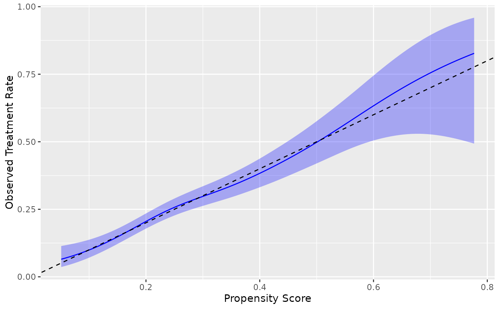
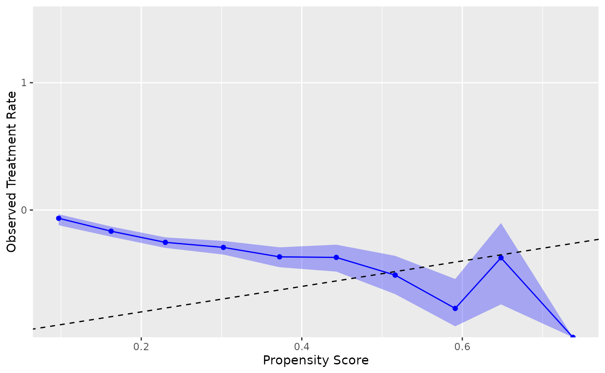
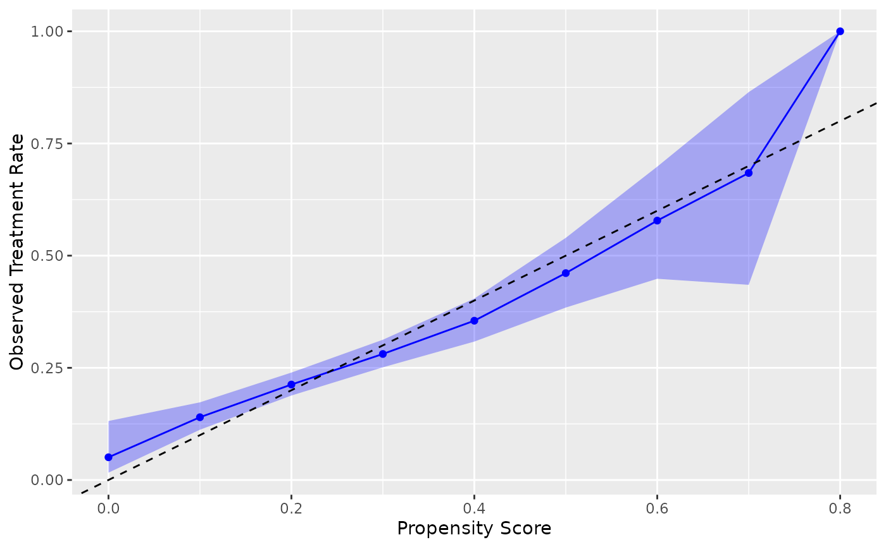

Geom for calibration plot with confidence intervals
Source:R/geom_calibration.R
geom_calibration.Rdgeom_calibration() creates calibration plots to assess the agreement between predicted
probabilities and observed binary outcomes. It supports three methods:
binning ("breaks"), logistic regression ("logistic"), and windowed ("windowed"), all computed with check_calibration().
Usage
geom_calibration(
mapping = NULL,
data = NULL,
method = "breaks",
bins = 10,
binning_method = "equal_width",
smooth = TRUE,
conf_level = 0.95,
window_size = 0.1,
step_size = window_size/2,
treatment_level = NULL,
k = 10,
show_ribbon = TRUE,
show_points = TRUE,
position = "identity",
na.rm = FALSE,
show.legend = NA,
inherit.aes = TRUE,
...
)Arguments
- mapping
Aesthetic mapping (must supply
estimateandtruthif not inherited).estimateshould be propensity scores/predicted probabilities,truthshould be treatment variable.- data
Data frame or tibble; if NULL, uses ggplot default.
- method
Character; calibration method - "breaks", "logistic", or "windowed".
- bins
Integer >1; number of bins for the "breaks" method.
- binning_method
"equal_width" or "quantile" for bin creation (breaks method only).
- smooth
Logical; for "logistic" method, use GAM smoothing if available.
- conf_level
Numeric in (0,1); confidence level for CIs (default = 0.95).
- window_size
Numeric; size of each window for "windowed" method.
- step_size
Numeric; distance between window centers for "windowed" method.
- treatment_level
The level of the outcome variable to consider as the treatment/event. If
NULL(default), uses the last level for factors or the maximum value for numeric variables.- k
Integer; the basis dimension for GAM smoothing when method = "logistic" and smooth = TRUE. Default is 10.
- show_ribbon
Logical; show confidence interval ribbon.
- show_points
Logical; show points (only for "breaks" and "windowed" methods).
- position
Position adjustment.
- na.rm
If
FALSE, the default, missing values are removed with a warning. IfTRUE, missing values are silently removed.- show.legend
Logical. Should this layer be included in the legends?
NA, the default, includes if any aesthetics are mapped.- inherit.aes
If
FALSE, overrides the default aesthetics, rather than combining with them.- ...
Other arguments passed on to layer().
Details
This geom provides a ggplot2 layer for creating calibration plots with confidence intervals. The geom automatically computes calibration statistics using the specified method and renders appropriate geometric elements (points, lines, ribbons) to visualize the relationship between predicted and observed rates.
The three methods offer different approaches to calibration assessment:
"breaks": Discrete binning approach, useful for understanding calibration across prediction ranges with sufficient sample sizes
"logistic": Regression-based approach that can include smoothing for continuous calibration curves
"windowed": Sliding window approach providing smooth curves without requiring additional packages
See also
check_calibration() for computing calibration statistics
Other ggplot2 functions:
geom_ecdf(),
geom_mirror_density(),
geom_mirror_histogram(),
geom_qq2(),
geom_roc()
Examples
library(ggplot2)
# Basic calibration plot using nhefs_weights dataset
# .fitted contains propensity scores, qsmk is the treatment variable
ggplot(nhefs_weights, aes(estimate = .fitted, truth = qsmk)) +
geom_calibration() +
geom_abline(intercept = 0, slope = 1, linetype = "dashed") +
labs(x = "Propensity Score", y = "Observed Treatment Rate")
#> Warning: Small sample sizes or extreme proportions detected in bins 9, 10 (n = 8, 3).
#> Confidence intervals may be unreliable. Consider using fewer bins or a
#> different calibration method.
#> Warning: Small sample sizes or extreme proportions detected in bins 9, 10 (n = 8, 3).
#> Confidence intervals may be unreliable. Consider using fewer bins or a
#> different calibration method.
#> Warning: Small sample sizes or extreme proportions detected in bins 9, 10 (n = 8, 3).
#> Confidence intervals may be unreliable. Consider using fewer bins or a
#> different calibration method.

# Using different methods
ggplot(nhefs_weights, aes(estimate = .fitted, truth = qsmk)) +
geom_calibration(method = "logistic") +
geom_abline(intercept = 0, slope = 1, linetype = "dashed") +
labs(x = "Propensity Score", y = "Observed Treatment Rate")

# Specify treatment level explicitly
ggplot(nhefs_weights, aes(estimate = .fitted, truth = qsmk)) +
geom_calibration(treatment_level = "1") +
geom_abline(intercept = 0, slope = 1, linetype = "dashed") +
labs(x = "Propensity Score", y = "Observed Treatment Rate")
#> Warning: Small sample sizes or extreme proportions detected in bins 9, 10 (n = 8, 3).
#> Confidence intervals may be unreliable. Consider using fewer bins or a
#> different calibration method.
#> Warning: Small sample sizes or extreme proportions detected in bins 9, 10 (n = 8, 3).
#> Confidence intervals may be unreliable. Consider using fewer bins or a
#> different calibration method.
#> Warning: Small sample sizes or extreme proportions detected in bins 9, 10 (n = 8, 3).
#> Confidence intervals may be unreliable. Consider using fewer bins or a
#> different calibration method.

# Windowed method with custom parameters
ggplot(nhefs_weights, aes(estimate = .fitted, truth = qsmk)) +
geom_calibration(method = "windowed", window_size = 0.2, step_size = 0.1) +
geom_abline(intercept = 0, slope = 1, linetype = "dashed") +
labs(x = "Propensity Score", y = "Observed Treatment Rate")
#> Warning: Small sample sizes or extreme proportions detected in windows centered at 0.8
#> (n = 3). Confidence intervals may be unreliable. Consider using a larger window
#> size or a different calibration method.
#> Warning: Small sample sizes or extreme proportions detected in windows centered at 0.8
#> (n = 3). Confidence intervals may be unreliable. Consider using a larger window
#> size or a different calibration method.
#> Warning: Small sample sizes or extreme proportions detected in windows centered at 0.8
#> (n = 3). Confidence intervals may be unreliable. Consider using a larger window
#> size or a different calibration method.
